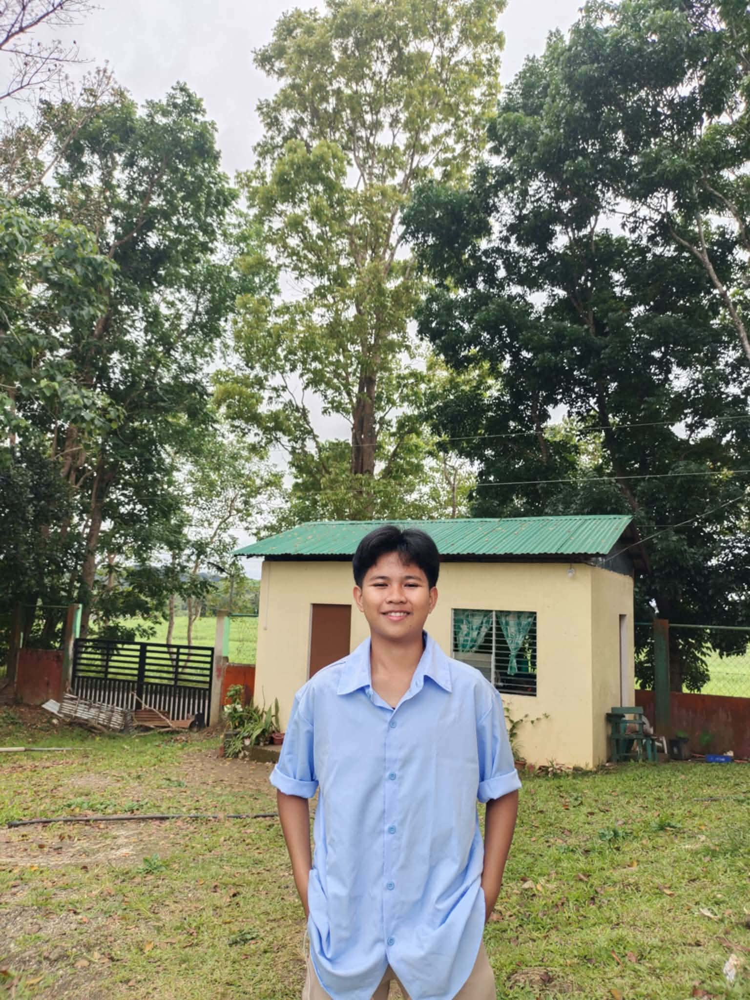
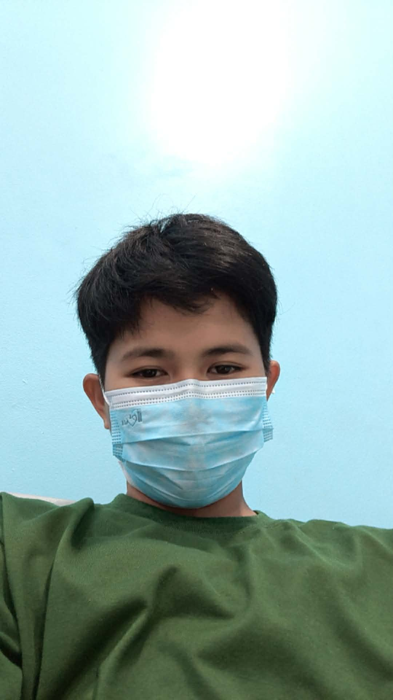
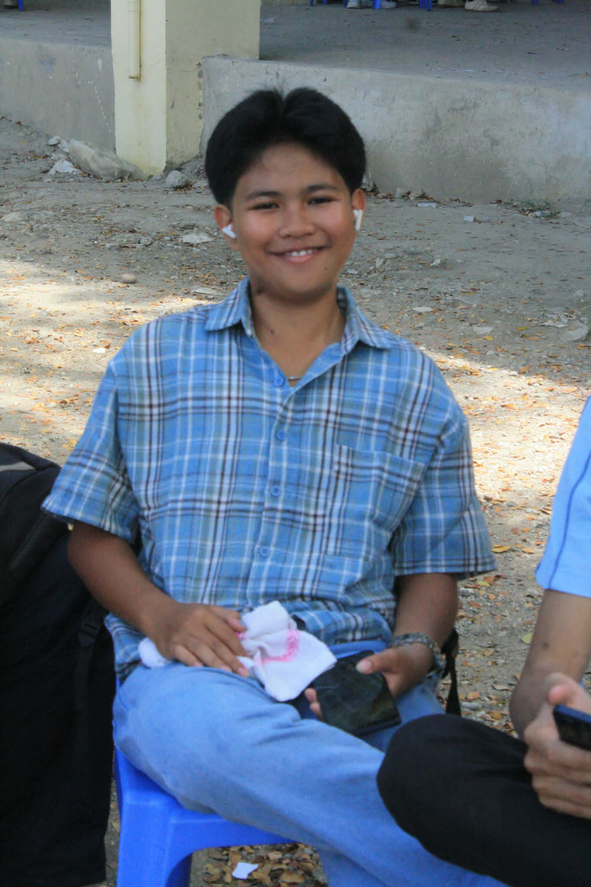
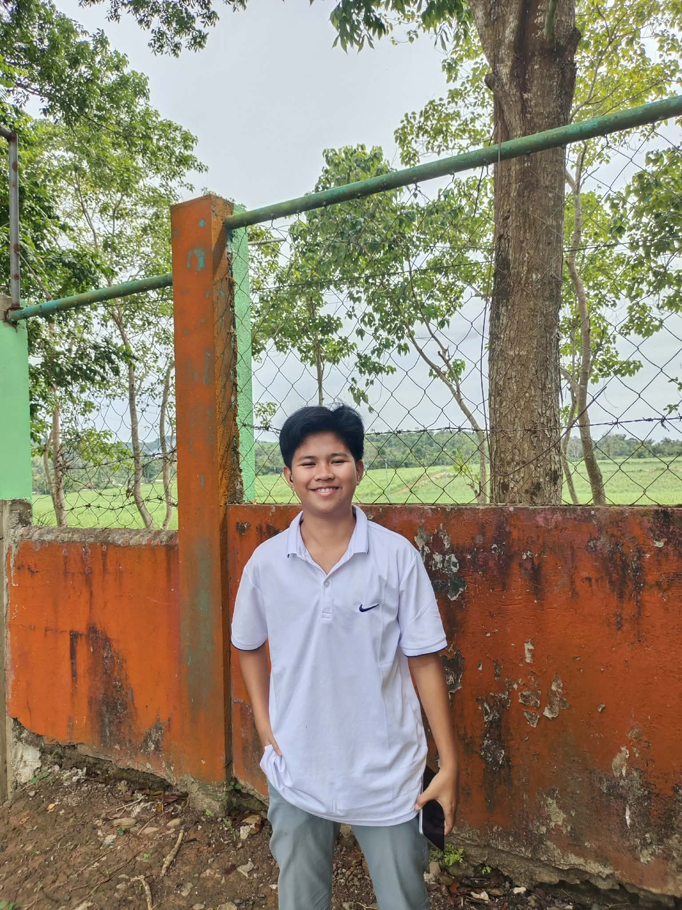
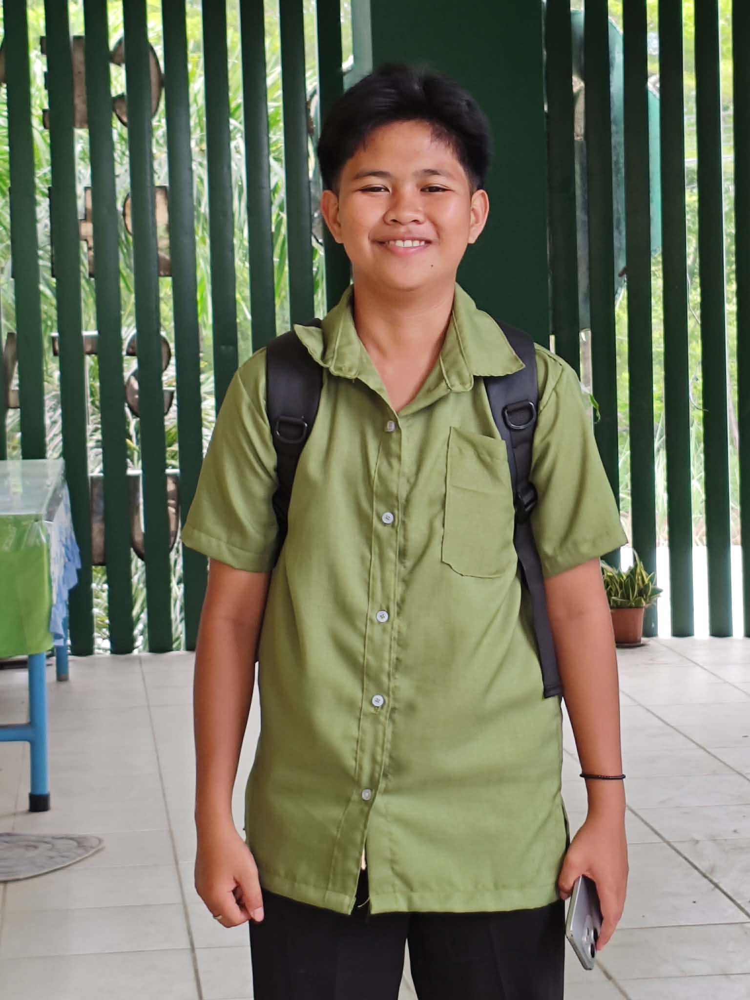

BSIT Student - Sophomore - Central Philippine State University
Hi, I'm Danica Tipo, a BSIT student. Currently in my sophomore year at Central Philippine State University. And, I'm from Sitio Iliranan, Barangay Codcod, San Carlos City, Negros Occidental.
BSIT is fun, but honestly kinda hard for me, too. And, I'm still learning the basics and figuring things out one step at a time.




BSIT Student - Central Philippine State University (2024 - Present)
Taking core IT courses including programming fundamentals, computer systems, and web-related subjects.
Group Project Contributor - School Requirements (Ongoing)
Collaborated with classmates on lab activities and course projects.
This Portfolio - Personal Project (2026)
Built this personal portfolio using HTML and CSS.
Central Philippine State University
BS in Information Technology - Sophomore (2nd Year)
Currently studying the foundations of information technology while based in San Carlos City, Negros Occidental.
Email: danicamarietipo@gmail.com
Based in Sitio Iliranan, Barangay Codcod, San Carlos City, Negros Occidental, Philippines.